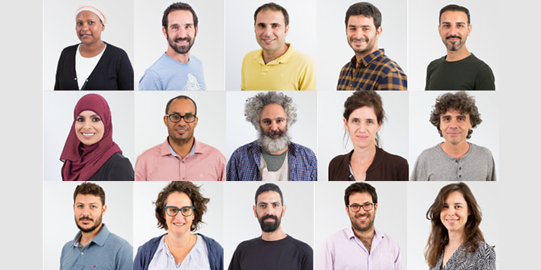
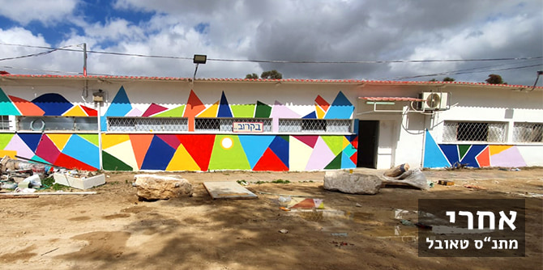
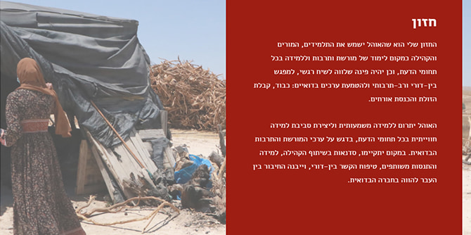
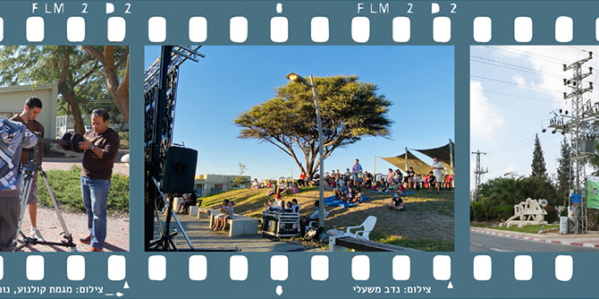
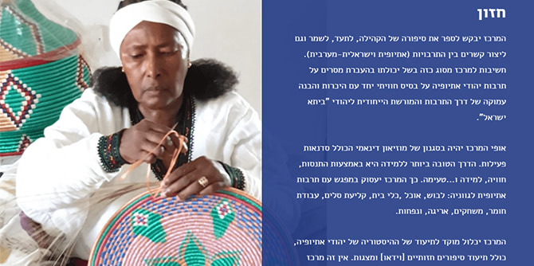
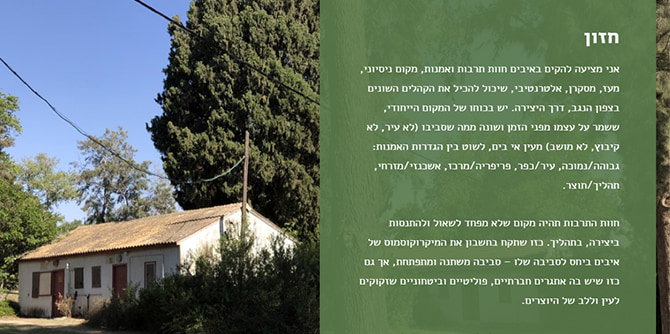

 בוגרי מחזור ב', תוכנית מנדל למנהיגות בתרבות נגב
במסגרת "הרכיב המעשי", המתקיים בתוכנית ההכשרה לצד התכנים התאורטיים, עמיתי התוכנית מתנסים בחקר ובעשייה בשדה המקומי שלהם, דרך תכנון ופיתוח של פרויקטים אישיים. בתהליך שנתי זה העמיתים מעמיקים בסוגיות מפתח בנגב הדורשות שינוי ושיפור, מגבשים חזון ומתרגמים אותו לעשייה תרבותית מחדשת ואיכותית.
הרכיב המעשי הוא ביטוי לתאוריית השינוי של התוכנית, ולפיה ביסוס חיי תרבות בני-קיימא המותאמים לחברה בנגב הם מנוף לשיפור החיים במרחב זה, המהווה מוקד של התרחשות אמנותית ותרבותית איכותית; וכי פיתוח מנהיגות ממוקדת-תרבות תקדם שימור של זהויות ומסורות, ובה בעת תתרום להעמקת הזהות הלוקאלית, כזו שתחזק את ייחודיות הנגב ותעמיק את הזיקה למקום.
תהליך העבודה על הפרויקטים, בהובלת מנהלת התוכנית פרופ' דנה אריאלי וחבר הסגל ד"ר יצחק (קיקי) אהרונוביץ, מלווה בהנחיה אישית וקבוצתית של צוות מומחים רב-תחומי, אשר מגיעים מעולמות של תרבות חזותית, קהילה, חינוך, אמנות, אוצרות, סוציולוגיה ומחקר. את פרי עמלם הציגו העמיתים באתר מיוחד שהוקם תחת הכותרת "חולמים תרבות בנגב" בהפקתה של חברת הסגל הדס קידר.
הפרויקטים השונים, כבדוגמאות שלהלן, מחוברים לאתגרי המקום והמרחב שבהם העמיתים פועלים, ומהווים התנסות בגיבוש יוזמה מנהיגותית מבוססת חזון ומונחית מחקר, המכוונת להתערבות בפועל במציאות.
היוזמה של יוגב וענונו, ממקימי בית "הומא", מיועדת לטפח אמנות ויצירה במרחב העירוני של באר שבע באמצעות טיפוח אמנים פלסטיים מקומיים ופיתוח שיעורי אמנות לנוער, וכן לקדם את המדיניות העירונית תוך שיתוף פעולה עם מחלקת התכנון העירונית. במרחב הציבורי של באר שבע כבר מתקיימות שלל פעילויות תרבות בהובלתו של יוגב וענונו, שנותנות מענה למחסור באמנות ובתרבות בתקופה שבה שעריהם של חללי התרבות נעולים. לאחרונה זכה יוגב באופן רשמי במכרז ההקמה והתפעול של העירייה, דבר שיאפשר את תחילת הפעילות השוטפת כבר ביוני 2021.

יוגב וענונו, אמנות פלסטית כמנוע לשינוי במרחב העירוני בבאר שבע: הגדלת הנוכחות של אמנים ויוצרים במרחב הציבורי הבאר-שבעי
הפרויקט של תמר הרצברג, מנהלת התחום הפדגוגי במוזיאון "משואה לתקומה", עוסק בשילוב מדריכים בני הקהילה הבדואית בצוות המוזיאון שבקיבוץ יד מרדכי, כחלק מחזון לקידום דיאלוג יהודי-ערבי משמעותי. הפרויקט מבוסס על התפיסה שהזיכרונות הטראומטיים של האוכלוסייה הערבית והיהודית החיות בנגב הם זיכרונות משפיעים ומכוננים, שיכולים לקדם דיאלוג המתנהל מתוך אמפתיה ולא מתוך חרדה. תמר הרצברג פיתחה את קורס ההכשרה בשיתוף עם עמותת "השחר החדש בנגב", אשר פועלת למען קידום חיים משותפים בנגב ובראשה עומד ג'מאל אלקרינאוי, בוגר מחזור א' של תוכנית מנדל למנהיגות תרבות בנגב. מחזור ההכשרה הראשון של הפרויקט השלים את לימודיו במהלך חודש פברואר 2021 ובוגריו השתלבו בצוות ההדרכה של מוזיאון "משואה לתקומה". המדריכים החדשים מובילים קבוצות בעברית ובערבית במסגרת הפעילות השוטפת של המוזיאון. בימים אלו נעשות הכנות לפתיחת מחזור הכשרה נוסף.
 תמר הרצברג, להבין עבר, לדמיין עתיד: הכשרה ושילוב של האוכלוסייה הבדואית בצוות מוזיאון יד מרדכי
תמר הרצברג, להבין עבר, לדמיין עתיד: הכשרה ושילוב של האוכלוסייה הבדואית בצוות מוזיאון יד מרדכי
היוזמה של אימאן אבו עליון, מורה ויזמת חברתית, מטרתה לפתח את השימוש באוהל הבדואי כמרחב חינוכי ותרבותי, ובאמצעותו לחבר את הדור הצעיר למורשת הבדואית. בחזונה, האוהל ישמש את התלמידים, המורים והקהילה כמקום לימוד של מורשת וכן יהיה פינה שלווה לשיח רגשי, למפגש בין-דורי ורב-תרבותי ולהטמעת ערכים בדואיים: כבוד, קבלת הזולת והכנסת אורחים. כך, לדבריה, ייבנה החיבור בין העבר להווה בחברה הבדואית.

אימאן אבו עליון, האוהל כמרכז לימוד ותרבות: חיבור הדור הצעיר של הקהילה הבדואית למורשת באמצעות מרחב למידה ייחודי
הפרויקט שמוביל נדב משעלי, מייסד סינמטק אופקים, שם לו למטרה להקים נדבך נוסף לסינמטק לטובת פעילות חינוכית, חזותית ורב-תרבותית לילדים ולנוער באופקים ובכל אזור הנגב המערבי. חזונו של נדב הוא להציע לילדים ונוער היכרות והתנסות במדיום הקולנועי ככלי להעצמת הביטוי והקול האישי שלהם. זאת באמצעות הקמת מסגרת א-פורמלית לפעילות חינוכית במגוון תחומי קולנוע, לרבות סדנאות ליצירה קולנועית, צפייה ביקורתית ועוד. נדב פועל בשיתוף פעולה עם אשכול נגב מערבי, ובקרוב ייצא לאקרנים סרט שהוא מביים יחד עם שותפתו מרים בן גיגי, על-פי תסריט שכתבו השניים.
 נדב משעלי, אופקים לקולנוע: מרחיבים את נקודת המבט – בית לעשייה חינוכית, חזותית ורב-תרבותית, לילדים ולנוער באופקים
הפרויקט של ווביט קרן קבדה עוסק בסיפורה של הקהילה האתיופית בישראל, בתיעודו, בשימורו וביצירת קשרים בין התרבות האתיופית לתרבות הישראלית-המערבית. היא מבקשת להקים מרכז שיכלול סדנאות פעילות ומפגש עם התרבות האתיופית לגווניה: לבוש, אוכל, מלאכת יד ומשחקים. לדבריה, אין זה מרכז לזכר העבר, אלא מרכז חי הכולל פעילויות שונות המיועדות לקהלי המבקרים השונים.
 ווביט קרן, מארץ הולדתי לארץ אבותיי: פיתוח וקידום מורשת "ביתא ישראל" בנגב
הפרויקט של אביבה פרידמן עוסק בהקמת מרכז אמנות אזורי בשטח ריק בסמוך למרכז קליטה, במיקום מרכזי במועצה האזורית שער הנגב, מול העיר שדרות ומכללת ספיר. מטרת הפרויקט להנכיח תרבות ויצירה אלטרנטיביות במרחב הכפרי המקיף את המקום ולחשוף את הקהלים המגוונים החיים באזור לתחומי אמנות שונים ולאפשרות לפעול במרחב.
אביבה פרידמן, מרכז לאמנות ותרבות באיבים: הקמת חוות תרבות לקידום חדשנות אמנותית ויצירה מקורית בנגב
אנו מלאי אמונה כי יוזמות הבוגרים יהוו בסיס לפעילות מנהיגותית בנושאים הדורשים שינוי ושיפור במצב התרבות בנגב, ומאחלים לבוגרים הטריים שיהיו מלאי עוז להמשיך ולתרגם חלומות למעשים, ולחולל מהלכים אמיצים ופורצי דרך כדי להיטיב עם הקהילה והחברה בנגב – מהלכים המקדמים חברה ערכית, בריאה ואיתנה.
בוגרי המחזור השני, לצד בוגרי המחזור הראשון, הם חלק מקהילה נבנית של מנהיגים ומנהיגות בתחום התרבות, האמנות והיצירה בנגב. בימים אלו מרכז מנדל למנהיגות בנגב מכשיר את המחזור השלישי, והמחזור הרביעי ייפתח בתשפ"ב.
לצפייה באתר "חולמים תרבות בנגב" לחצו כאן >>
-
בוגרי מחזור ב', תוכנית מנדל למנהיגות בתרבות נגב -
יו -
תמר הרצברג, להבין עבר, לדמיין עתיד: הכשרה ושילוב של האוכלוסייה הבדואית בצוות מוזיאון יד מרדכי -
אימאן אבו עליון, האוהל כמרכז לימוד ותרבות: חיבור הדור הצעיר של הקהילה הבדואית למורשת באמצעות מרחב למידה ייחודי -
נדב משעלי, אופקים לקולנוע: מרחיבים את נקודת המבט – בית לעשייה חינוכית, חזותית ורב-תרבותית, לילדים ולנוער באופקים -
ווביט קרן, מארץ הולדתי לארץ אבותיי: פיתוח וקידום מורשת "ביתא ישראל" בנגב -
אביבה פרידמן, מרכז לאמנות ותרבות באיבים: הקמת חוות תרבות לקידום חדשנות אמנותית ויצירה מקורית בנגב
{kind=link}
{kind=link}
{kind=link}
{kind=link}
{kind=link}
{kind=link}